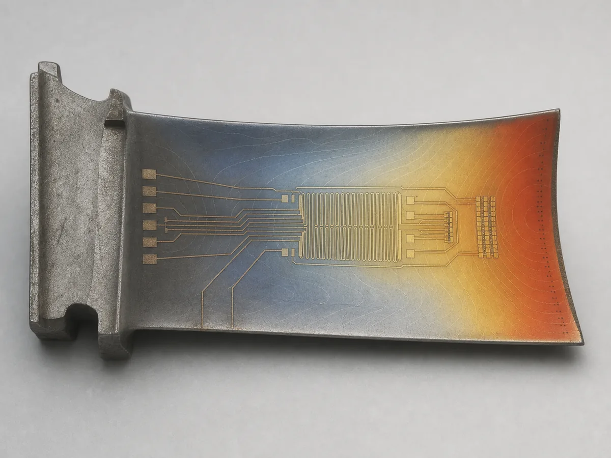
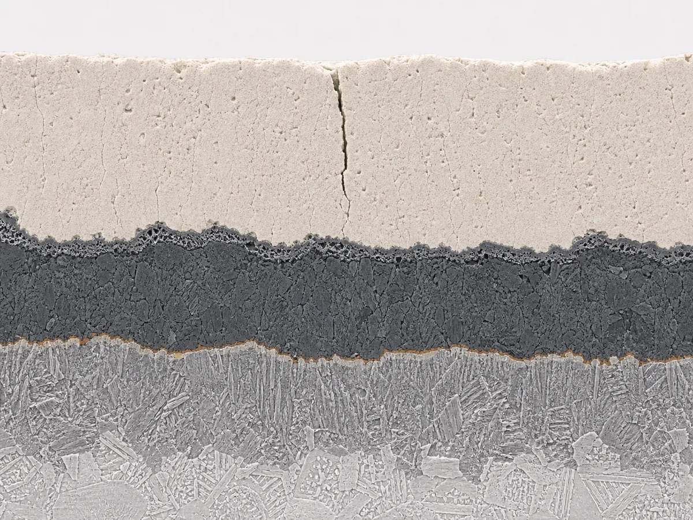
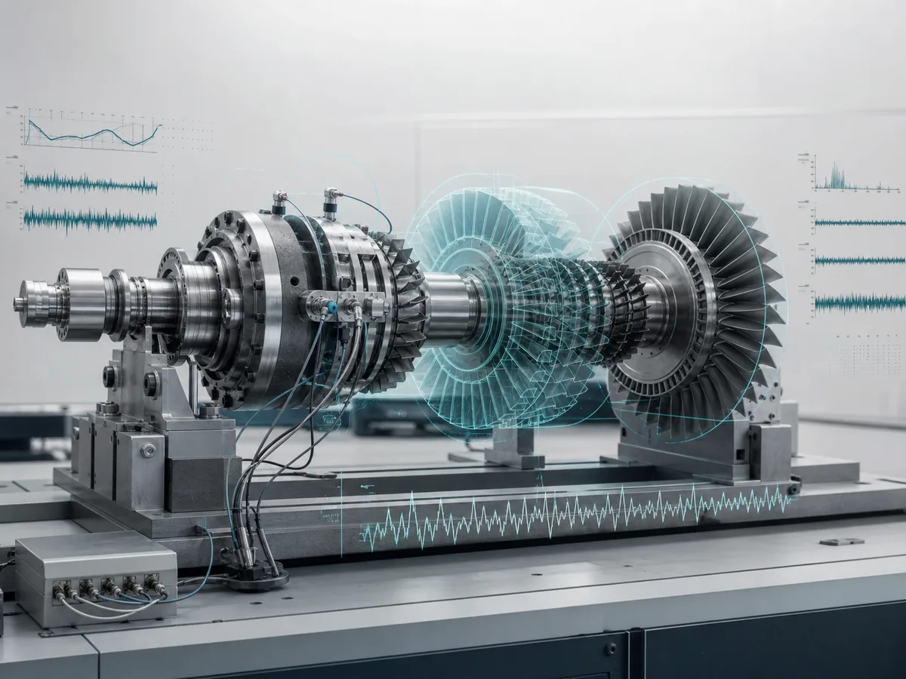

Current position
Associate Professor
School of Mechanical and Electrical Engineering
Central South University
I am a research engineer interested in understanding, modelling, and optimising the mechanical behaviour of materials and complex engineering systems. I work as an Associate Professor at the School of Mechanical and Electrical Engineering, Central South University.
My research lies at the interface of mechanics, materials science, sensing, and intelligent machinery. Current interests include integrated thin-film sensors for extreme environments, the reliability of protective coatings, and data-informed health management of complex mechanical equipment.
I welcome enquiries from researchers in academia and industry who are interested in potential collaboration. Prospective PhD students and postdoctoral researchers with backgrounds in aerospace engineering, mechanical engineering, materials science, or mechanics are also encouraged to get in touch.
Associate Professor
School of Mechanical and Electrical Engineering
Central South University
Laboratory of Intelligent Mechanical and Perception
State Key Laboratory of High Performance Complex Manufacturing
Our work combines mechanical analysis, materials characterisation, sensor fabrication, and data-driven methods to address reliability and monitoring challenges in demanding engineering environments.

Direct-writing and inkjet-printing approaches for temperature, heat-flux, and strain sensing in extreme aerospace environments, with particular attention to interface integrity and long-term performance.

Failure mechanisms, strength assessment, life prediction, and structural design of thermal-barrier, wear-resistant, and stealth coatings used on high-temperature components.

Machine-learning-assisted fault diagnosis, case-based reasoning, digital twins, and human–machine interfaces for the health management of complex equipment.
H. Qin, C. Xu, Y. Sun, M. Cheng, R. Jiang, T. Fan, P. Ji, Z. Fu, H. Zhou, Y. Lv, J. Song, J. Huang, and X. Yang. “Investigation of history-dependent fatigue damage accumulation of nickel-based single-crystal superalloy under sequential TMF and ITLCF loading.” International Journal of Fatigue 211, 109726 (2026).
J. Song, S. Zhang, J. Huang, R. Lv, Y. Ma, X. Chen, and L. Qiu. “A physics-informed data-driven framework for interfacial strength prediction and microstructure design of inkjet-printed ITO films.” Engineering Fracture Mechanics 344, 112374 (2026).
S. Zhang, J. Song, J. Huang, Z. Lu, Y. Ma, X. Chen, and L. Qiu. “Physics-informed process parameter optimization of interfacial bond strength for inkjet-printed ITO films.” Engineering Fracture Mechanics 340, 112135 (2026).
Z. Lu, S. Zhang, J. Song, J. Huang, and L. Qiu. “A novel thermal kinetic index method for evaluating interfacial strength in laser-sintered direct-write films.” Progress in Additive Manufacturing 11(7), 6765–6779 (2026).
Y. Wu, J. Song, J. Huang, T. Huang, H. Zhu, Y. Li, and L. Qiu. “Programmable line-morphologies of material-extrusion 3D printed self-leveling inks with various apparent viscosity.” Journal of Manufacturing Processes 172, 1057–1072 (2026).
L. Deng, Z. Liu, Y. Liu, S. Zhang, T. Huang, S. Guo, Y. Ma, X. Chen, L. Qiu, J. Song, and J. Huang. “Interfacial strengthening mechanisms of inkjet-printed ITO/YSA multilayer sensors under different sintering temperatures.” Surfaces and Interfaces 90, 109248 (2026).
L. Han, L. Qiu, L. Deng, J. Song, S. Zhang, X. Chen, X. Zhang, and J. Huang. “Laser sintering path effects on interfacial adhesion of inkjet-printed In2O3 films for thin-film thermocouples.” Optics & Laser Technology 193, 114253 (2026).
H. Qin, H. Hou, C. Xu, J. Song, B. Dong, and J. Huang. “Effects of manufacturing defects and microstructure on the tensile and low cycle fatigue behavior of selective laser melting IN718 TPMS structures.” Thin-Walled Structures 222, 114528 (2026).
H. Qin, Z. He, R. Li, J. Song, Y. Lv, Z. Fu, Y. Sun, J. Wang, and J. Huang. “Experimental investigation on stress level sensitive weakening effect of notched Ni-based single crystal superalloy under cyclic creep loadings.” Materials Characterization 231, 115856 (2026).
Z. Lu, P. Liao, J. Song, and Y. Tian. “Pushing boundaries: Nature-inspired hybrid microstructured flexible sensors with enhanced detection range.” Chemical Engineering Journal 521, 166839 (2025).
J. Song, S. Zhang, J. Huang, Z. Lu, and L. Qiu. “Optimizing coffee ring patterns through enhanced thermal control: Effects of artificial temperature gradients.” Journal of Alloys and Compounds 1039, 183112 (2025).
Z. Lu, J. Wang, J. Song, Z. Yang, F. A. Hammad, and Y. Tian. “Microcrack-engineered flexible strain sensors enabled by carbon black/graphene/conductive carbon paste ternary nanocomposites for enhanced sensitivity.” Journal of Materials Science: Materials in Electronics 36(21), 1315 (2025).
J. Huang, H. Qin, R. Li, Z. He, J. Song, Z. Fu, Y. Lv, Y. Sun, P. Ji, and T. Dai. “Influence of loading sequence on notch creep behavior of Ni-based single crystal superalloy.” Materials Science and Engineering: A 939, 148472 (2025).
J. Song, S. Zhang, J. Huang, Z. Lu, and L. Qiu. “Unified fracture modeling for brittle film interfaces under complex stress conditions.” Surfaces and Interfaces 63, 106332 (2025).
M. Chen, J. Song, and J. Huang. “A novel fatigue life model for MCrAlY coated superalloys considering interfacial microstructure evolution.” Engineering Fracture Mechanics 310, 110528 (2024).
Z. Lu, J. Wang, L. He, J. Song, Z. Yang, and F. A. Hammad. “High-performance multidirectional flexible strain sensor for human motion and health monitoring.” ACS Applied Materials & Interfaces 16(31), 41409–41420 (2024).
X. Huang, H. Qi, S. Li, J. Song, X. Yang, and D. Shi. “Creep-fatigue behavior of thermal barrier coated single-crystal nickel-based superalloys.” Ceramics International 50(20), 39800–39810 (2024).
J. Song, J. Yang, M. Chen, J. Huang, and Z. Lu. “Quantitative analysis of interfacial microstructural degradation in MCrAlY-coated superalloys during varied service conditions.” Journal of Alloys and Compounds 988, 174333 (2024).
J. Xia, L. He, Z. Lu, J. Song, Q. Wang, L. Liu, and Y. Tian. “High performance strain sensor based on carbon black/graphene/Ecoflex for human health monitoring and vibration signal detection.” ACS Applied Nano Materials 6(20), 19279–19289 (2023).
J. Song, J. Huang, and Z. Lu. “Effects of pre-exposure duration and temperature on interfacial diffusion-induced fatigue life degradation of MCrAlY-coated single crystal superalloys.” International Journal of Fatigue 177, 107977 (2023).
Z. Lu, Y. Deng, X. Zhou, L. He, J. Song, Q. Wang, J. Xia, L. Liu, F. A. Hammad, and Y. Tian. “Highly stretchable conductor inspired by compliant mechanism.” Advanced Electronic Materials 9(11), 2300343 (2023).
J. Song, J. Huang, Z. Lu, and H. Qi. “Two aspects of high interfacial strength regarding the cracking behaviour of MCrAlY-coated superalloys.” Materials Science and Technology 39(16), 2353–2362 (2023).
J. Song, Z. Li, H. Tan, J. Huang, and M. Chen. “A comparative study of creep-fatigue life prediction for complex geometrical specimens using supervised machine learning.” Engineering Fracture Mechanics 291, 109567 (2023).
J. Huang, Z. He, P. Guo, S. Lyu, J. Song, H. Liu, Z. Li, Z. Fu, Y. Lv, Y. Sun, X. Huang, and D. Xia. “Experimental investigation on creep strengthening phenomenon of a Ni-based single crystal superalloy under cyclic loading and unloading conditions.” Journal of Alloys and Compounds 953, 170111 (2023).
J. Song, J. Huang, Z. Lu, L. Qiu, H. Qi, and Z. Yan. “Structural-dependent mechanical behaviors of ink-jet printed films: Indentation testing and phase field fracture modeling.” Surface and Coatings Technology 468, 129749 (2023).
J. Song, J. Huang, and L. Qiu. “Enhancing the adhesion strength of ink-jet printed indium tin oxide films: The role of printing parameters.” Materials & Design 232, 112140 (2023).
J. Xia, L. He, Z. Lu, L. Liu, J. Song, S. Chen, Q. Wang, F. A. Hammad, and Y. Tian. “Stretchable and sensitive strain sensors based on CB/MWCNTs–TPU for human motion capture and health monitoring.” ACS Applied Nano Materials 6(11), 9736–9745 (2023).
J. Song, Y. Fan, J. Huang, and W. Huang. “A viscoplastic-coupled phase field modelling for mechanical behaviors of thermal barrier coating system with randomly microporous structures.” Engineering Fracture Mechanics 284, 109268 (2023).
J. Song, J. Huang, Z. Huang, and H. Liu. “Coupled diffusion-viscoplasticity-phase field modeling for calcia-magnesia-alumina-silicate (CMAS) corrosion assisted fracture of thermal barrier coating system.” European Journal of Mechanics - A/Solids 98, 104900 (2023).
X. Huang, H. Qi, S. Li, J. Song, X. Yang, and D. Shi. “Effect of thermal barrier coatings on the fatigue behavior of a single crystal nickel-based superalloy: Mechanism and lifetime modeling.” Surface and Coatings Technology 454, 129184 (2023).
J. Huang, Z. He, S. Lyu, X. Yang, D. Shi, Y. Sun, Y. Lyu, Z. Fu, G. Miao, and J. Song. “A physically-based representative stress methodology for predicting stress rupture life of Ni-based DS superalloy.” Chinese Journal of Aeronautics 36(6), 174–185 (2023).
J. Song, L. G. Zhao, H. Qi, S. Li, D. Shi, J. Huang, Y. Su, and K. Zhang. “Coupling of phase field and viscoplasticity for modelling cyclic softening and crack growth under fatigue.” European Journal of Mechanics - A/Solids 92, 104472 (2022).
K.-J. Yan, W.-Q. Huang, Z.-X. Zuo, P.-R. Ren, D.-W. Li, C.-Z. Zhao, J.-N. Song, and X.-B. Zhang. “Microstructure based analysis and predictive modeling of cast Al7Si1.5Cu0.4Mg alloy mechanical properties.” Materials Today Communications 30, 103102 (2022).
Y. Liu, S. Xia, J. Song, H. Qi, S. Li, X. Yang, and D. Shi. “Stress analysis and lifetime prediction for Ti–6Al–4V welding joint under fatigue loading.” Materials Science and Technology 37(11), 969–978 (2021).
Y. Su, G. Fu, C. Liu, K. Zhang, L. Zhao, C. Liu, A. Liu, and J. Song. “Thermo-elasto-plastic phase-field modelling of mechanical behaviours of sintered nano-silver with randomly distributed micro-pores.” Computer Methods in Applied Mechanics and Engineering 378, 113729 (2021).
J. Song, H. Qi, S. Li, X. Yang, D. Shi, and C. Fei. “A diffusion-coupled cohesive element model for cracking analysis of thermal barrier coatings.” Engineering Fracture Mechanics 246, 107625 (2021).
Y. Liu, H. Qi, J. Song, S. Li, D. Shi, and X. Yang. “Low-cycle fatigue of MCrAlY-coated superalloys: A fracture mechanics-based analysis.” Materials Science and Technology 37(2), 151–161 (2021).
J. Song, H. Qi, S. Li, D. Shi, and X. Yang. “A novel fatigue life model considering surface-damage induced performance degradation.” Engineering Fracture Mechanics 228, 106899 (2020).
D. Shi, J. Song, H. Qi, S. Li, and X. Yang. “Effect of interface diffusion on low-cycle fatigue behaviors of MCrAlY coated single crystal superalloys.” International Journal of Fatigue 137, 105660 (2020).
J. Song, H. Qi, S. Li, D. Shi, and X. Yang. “Computational method for the analysis of erosion-induced stress and damage in thermal barrier coatings.” Surface and Coatings Technology 380, 125089 (2019).
D. Shi, J. Song, S. Li, H. Qi, and X. Yang. “Cracking behaviors of EB-PVD thermal barrier coating under temperature gradient.” Ceramics International 45(15), 18518–18528 (2019).
J. Song, H. Qi, D. Shi, X. Yang, and S. Li. “Effect of non-uniform growth of TGO layer on cracking behaviors in thermal barrier coatings: A numerical study.” Surface and Coatings Technology 370, 113–124 (2019).
S. Li, H. Qi, J. Song, X. Yang, and C. Che. “Effect of bond-coat surface roughness on failure mechanism and lifetime of air plasma spraying thermal barrier coatings.” Science China Technological Sciences 62(6), 989–995 (2019).
J. Song, S. Li, X. Yang, D. Shi, and H. Qi. “Numerical study on the competitive cracking behavior in TC and interface for thermal barrier coatings under thermal cycle fatigue loading.” Surface and Coatings Technology 358, 850–857 (2019).
S. Li, H. Yang, H. Qi, J. Song, X. Yang, and D. Shi. “Experimental study and numerical modeling of the damage evolution of thermal barrier coating systems under tension.” Science China Technological Sciences 61(12), 1882–1888 (2018).
S. Li, X. Yang, H. Qi, J. Song, and D. Shi. “Low-temperature hot corrosion effects on the low-cycle fatigue lifetime and cracking behaviors of a powder metallurgy Ni-based superalloy.” International Journal of Fatigue 116, 334–343 (2018).
J. Song, S. Li, X. Yang, H. Qi, and D. Shi. “Numerical investigation on the cracking behaviors of thermal barrier coating system under different thermal cycle loading waveforms.” Surface and Coatings Technology 349, 166–176 (2018).
ResearchGate currently displays 51 publication records and 685 citations. This academic list contains 47 unique, formally published journal articles after removing preprints and duplicate records. ResearchGate does not publicly report an h-index for this profile. Last reviewed: 5 August 2026. View the source record.
Regular reviewer for journals including Journal of Materials Science, Surface and Coatings Technology, and International Journal of Metallurgy and Metal Physics.
| 2015–2022 | PhD, Aeronautical and Astronautical Science and Technology Beihang University Including a CSC-sponsored joint-training period at Loughborough University, UK. |
|---|---|
| 2010–2014 | BEng, Aeronautical and Astronautical Science and Technology Beihang University |
For research collaboration or enquiries about PhD and postdoctoral opportunities, please email songjianan@csu.edu.cn.
Appointments, academic service, awards, invited talks, and other professional updates will be posted here.